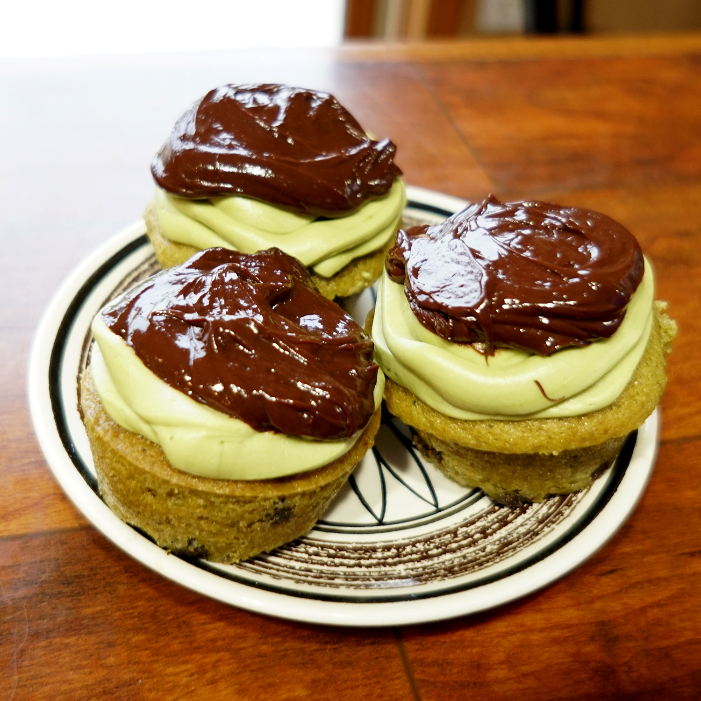
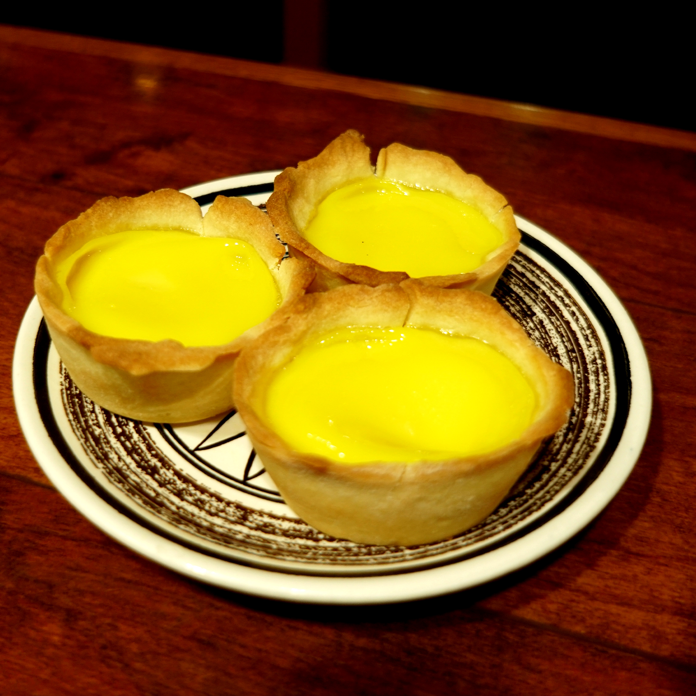

All these desserts have sugar, but to create these you don't have to be a connoisseur

Ingredients
Cupcake Base
- 1 1/4c Flour
- 2t Matcha Powder
- 1 1/4t Baking Powder
- 1/2t Baking Soda
- 1/2t Salt
- 2 Eggs
- 1/2c Canola Oil
- 3/4c Sugar
- 2t Vanilla Extract
- 1/2c Buttermilk
- 2c Semi-Sweet Chocolate Chips
Buttercream
- 1c Unsalted Butter, Softened
- 2c Powdered Sugar
- 2t Matcha Powder
- 2t Vanilla Extract
Ganache
- 3oz Dark Chocolate
- 3oz Heavy Whipping Cream
Green Fairy Cakes (Matcha Cupcakes)
Cupcakes
- Preheat oven to 350F
- Combine the flour, matcha powder, baking powder, baking soda, and salt. Set aside.
- Whisk eggs together then add oil and combine. Add sugar and whisk for a minute. Add vanilla and half of the buttermilk. Mix until just combined.
- Add half of the dry ingredients and whisk until combined. Add the rest of the buttermilk, combine, add rest of the dry ingredients with half of the chocolate chips. Mix until just combined.
- Pour batter evenly into cupcake pan lined with cupcake liners. Spread the other half of the chocolate chips on top of the cupcakes.
- Bake for 12-15 minutes until puffed and lightly brown.
Buttercream
- Cream butter. Sift powdered sugar and matcha into butter.
Ganache
- Heat heavy whipping cream in a small sauce pan until it just comes to a boil.
- While the cream is heating, chop dark chocolate and place in heat-proof bowl.
- Pour hot cream over the chocolate. Mix until all the chocolate has melted.
- Cool slightly
Assembly
- Top cooled cupcakes with buttercream. Refrigerate until buttercream is solid. Top with ganache.

Ingredients
- 225g Flour
- 50g Powdered Sugar
- 9T Unsalted Butter
- 3 Eggs
- 150ml Hot Water
- 75g White Sugar
- 1/2t Vanilla Extract
- 85ml Evaporated Milk
Egg Custard
- Add the flour, powdered sugar, and butter to a food processor. Pulse until the mixture resembles wet sand.
- Add 1 egg into the processor. Pulse until the mixture forms a soft ball of dough. Wrap in plastic wrap and refrigerate for about 30 minutes or until ready to use.
- In a seporate bowl, combine hot water with sugar and vanilla. Whisk until incorperated.
- Combine 2 eggs with evaporated milk. Add the sugar-water mixture and whisk together. Strain the mixture through a fine mesh sieve into a pour-friendly container to help with tart filling later.
- On a well-floured surface, roll the dough to a thickness of about 1cm. Cut rounds a bit larger than the cupcake tin you will use later.
- Line the cupcake tin with the pastry rounds. Gently press up against the sides. It's ok to make the pastry thinner to make it. You just want a whisp of crust above the tin.
- Pour the mixture into each tart shell, about 3/4 of the way full.
- Bake in a 400F oven for 10 minutes. Then lower the heat to 350F and bake for another 15 minutes, until the pastry is golden brown and the filling is set.